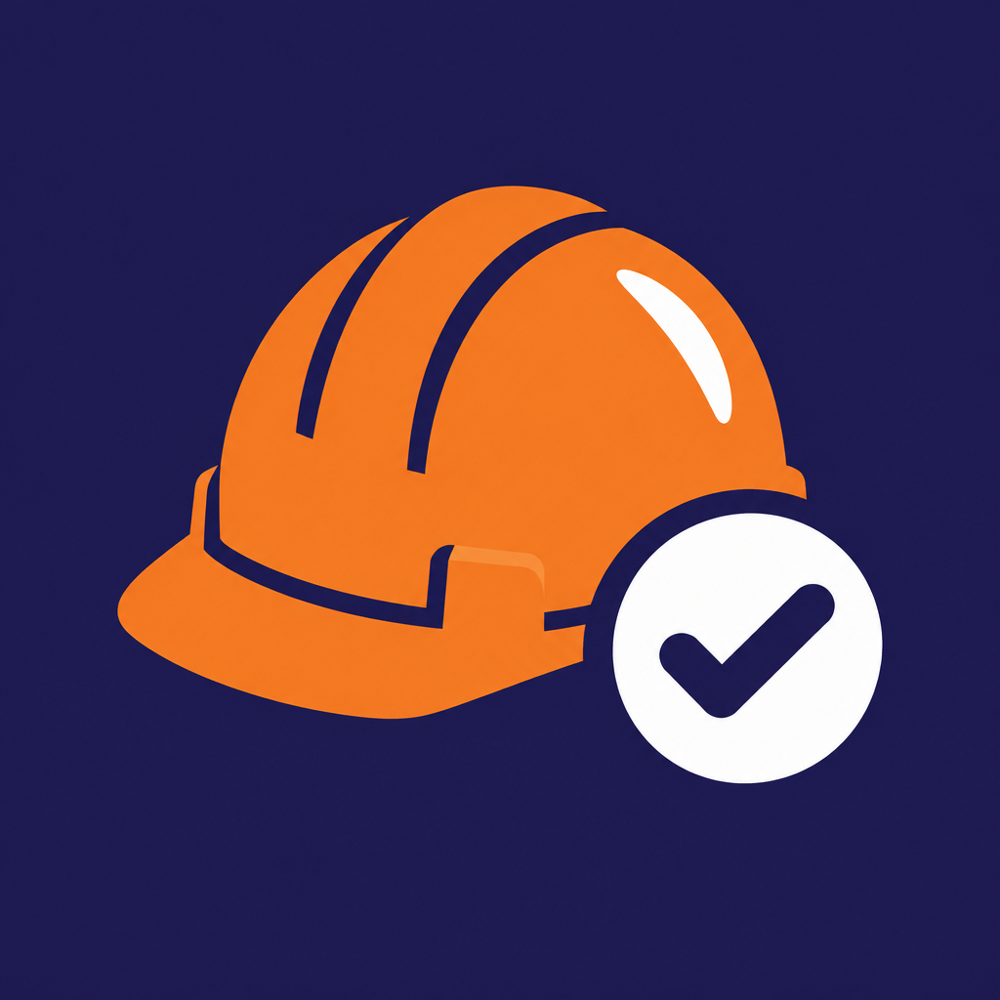

Bangla word for "protection". Short, easy to say, and works for any sector you add later.
"Watch out!" Everyone in Bangladesh knows it from signs; punchy and game-like.
Names the core gameplay (finding hazards). Feels most like a game.
Matches the supervisor walking between scenes. Slightly longer.
Uses a goal industry already talks about. More serious, less playful.
"Work protection". Formal, fits official training use; less catchy.